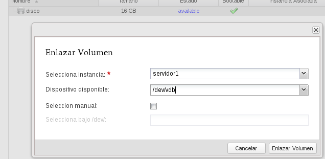

Acciones que podemos realizar sobre las instancias

Gestión avanzada de instancias
- Redimensionar una instancia:Esta acción sirve para cambiar las características hardware del servidor, a través de asociar un flavor diferente al mismo. Para terminar se puede "Confirmar la redimensión" o "Revertir la redimensión"
Gestión avanzada de instancias
- Rescatar un servidor:Un usuario puede poner una máquina virtual en modo de rescate, de esta forma se puede acceder al servidor con una nueva contraseña y corregir cualquier sistema de fichero o errores de configuración. Se puede poner un servidor en modo rescate a un servidor que no permite acceder al sistema debido a diferentes errores. Cuándo se pone un servidor en modo rescate no se puede acceder a él hasta que este cambia de ACTIVE a RESCUE, esto proceso puede tardar un poco.
Volúmenes. Conceptos previos
- Volumen: Dispositivo de bloques que se puede asociar y desasociar de una instancia cuando se desee
- Utilizado para proporcionar almacenamiento permanente o independiente de la vida de una instancia
- El componente de OpenStack que gestiona los volúmenes se llama Cinder.
- Un volumen en cinder es equivalente a una unidad lógica en SAN
- Cinder es equivalente a Amazon EBS
- Hasta ahora no es posible asociar un volumen a más de una instancia a la vez o modificar el tamaño de un volumen "en caliente"
Gestión de volúmenes en StackOps Portal
Creación de Volúmenes

Asociación de volumen a instancias (1)

Asociación de volumen a instancias (2)

Instantáneas de volúmenes (1)

Instantáneas de volúmenes (2)

Instantáneas de volúmenes (3)

Crear una instancia a partir de un volumen (1)

Crear una instancia a partir de un volumen (2)

Demostración
- Gestión avanzada de instancias: redimensión y rescate.
- Creación de volúmenes, asociación a instancias.
- Instantaneas de volúmenes
- Creación de instancia ejecutadas sobre volúmenes.